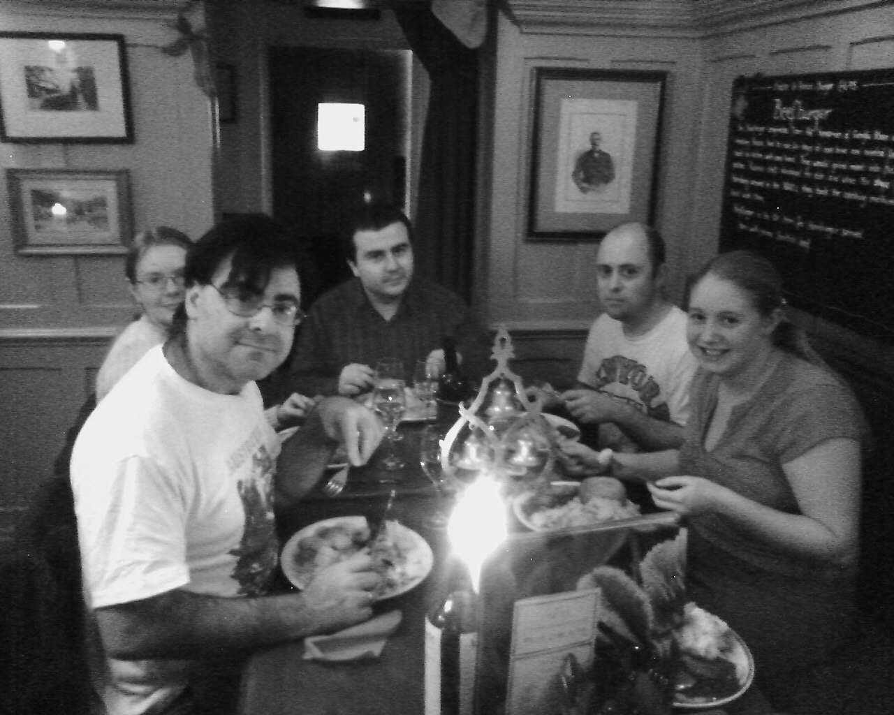
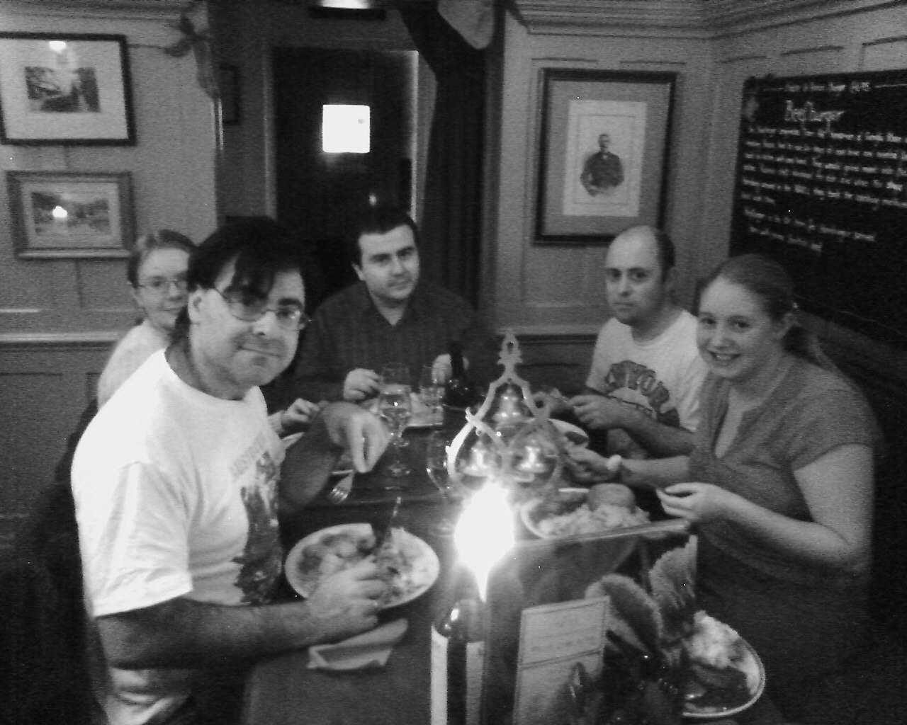

Ancient Society of Esquire Leeds [Kent] Youths.
Celebration of the 249th Anniversary
Members of the Ancient Society of Esquire Leeds Youths and ringing friends from many parts of the country gathered in Kent in large numbers on Sunday 17th December 2000 for the 249th anniversary dinner of the society.
Ringing took place at the usual churches at which the society is engaged in training and providing ringing; at Mersham, Ashford and Leeds during the morning. The members present attended the Parish Holy Communion service at Leeds, and a very good address was given by the Vicar, who officiated.
THE DINNER
Afterwards, a goodly company dined together in ‘the room’ at the Ten Bells Inn, and those present who had dined at the previous year’s dinner were heard to remark that the gathering had increased by a goodly percentage this year.
The chair was taken by the Master, who reminisced of the memorable moments and accomplishments in the year past. He reminded those assembled that it was less than two years since the Society had been re-established, and since that time the members had contributed greatly to the strength of the Society. It was, he said, generally recognised in the Parishes which the Society serves, that they were a well organised bunch of men, who did their best to produce the best striking, while at the same time welcoming beginners to the exercise, and ‘pointing the way’, so to speak.
The Master also touched on some of the activities of it’s affiliated companies – The Antient Society of Eastern Youths of London, who have had a very busy year in the continued restoration of that celebrated peal of bells at St Paul, Shadwell. The Master said that, although he had been at the forefront of the ‘physical work’ in the tower (which was buried in 180 years worth of pollution!) he also wished to thank Messrs Renyard for their occasional help, and Mr Moore’s father and Mr Gower for their services in welding some corroded ironwork. The Leeds Youths were looking forward to this fine old peal of eight ringing out again, early in 2001. Furthermore, it was generally agreed by the company that they would be a great challenge to ring, as an authentic installation from 1820, with all their original fittings retained.
The Romney Marsh and District Guild had a rather quieter year during 2000, partly due to the general inactivity and apathy in the area. However, progress had been made at Woodchurch, with a regular practice night being re-instated and a couple of young lads in training there. The members of the Guild were also very pleased that a number of ladies had become members, and it was quite lovely to have a number of talented young ladies attempting quarter peals, and attending practices with the Guild.
The Master also reminded members, as a final point, that midnight ringing to welcome the New Year would take place at Ashford, it being the largest audience, and stressed the importance of a ‘good show.’
After the repast, the loyal toast to the Grand Master (James Barham; Master 1751 – 1819) was drunk, and the National Anthem sung.
PREPARATIONS FOR THE 250th ANNIVERSARY
The Master proposed the toast of ‘The Church’ and remarked succinctly, ‘No Church, no Ancient Society.’ The coming year would be a busy one, with two peals planned at Leeds towards the end of the year on the same dates as those rung 250 years ago. It was indeed a grand thing that the bells at Leeds were little altered since the installation of the front six by Mr Catlin of Holborn and the construction of a purpose-built wooden ten bell frame in 1751. One can stand in the belfry and admire that sonorous peal on their lovely old plain bearings by that master of bellhanging, Mr Bowell of Ipswich. Except for the recasting of seven and nine by Mr Bowell in 1911 and the rehanging and quarter turning of the bells at the same time, they are untouched.
Apart from peal ringing, another thing which would be exercising the minds of the officers during the coming year would be the fit ways and means of celebrating a great event in the life of that Ancient Society.
In coupling with the toast the name of Mr D. Paul Smith, the Master said he would be much in the minds of the members of the Leeds Youths this year, and his guidance would be sought as to the best ways of celebrating the 250th Anniversary year. Mr Smith – who was present at the dinner – had done another great Society proud during his year as Master of that Company, and though he will never ring again, he was highly valued by many Leeds Youths for his great suggestions and support for them in their social activities. He thanked Mr Smith for his attendance at the dinner, for his help throughout the year, and particularly for providing transport during the day.
The Master closed the post-prandial proceedings by charging his glass and taking wine with the members present. He again stated how pleased he was that such a good relationship was maintained with the incumbents at the various towers at which the Leeds Youths were engaged, and ended with the toast “Let us now praise famous men, and our Fathers which begat them.”
A SPLENDID END
The formal proceedings concluded, the majority of members returned to Ashford for a short period of lively banter in The Farriers Arms, Mersham, while the Master and Mr Smith attended the service of seven lessons and carols at Broomfield. The ring of three bells were put into action; the Master taking 2 & 3, and the verger Mr Hadlow chiming the Treble. The service was very well organised by the villagers, and the Church looked truly traditional.
When the company met up in the Farriers arms again at just after five o’clock, there was an air of satisfaction with the proceedings thus far completed. The final challenge was to perform a touch of 1440 Kent T.B. Minor prior to the Parish nine lessons and carol service at Mersham. The rest of the local band had very kindly stepped aside to allow the company to perform, and the company record herewith their gratitude. For the record, five Leeds Youths and one friend of the company took part, and the method was changed to Bob Minor conducted by Mr Chittenden Pile. The Master took the fifth (it being the most hideously oddstruck) and the performers generally agreed that it was the hardest performance they had yet endured. The band stood in the order: Mr I Renyard 1, Mr P Renyard 2, Mr I C Moore 3, Mr A Clark (non member) 4, Mr C J Cooper 5, Mr Chittenden-Pile 6.
The Master claimed 5 blood-blisters as battle scars. The Company then adjourned to the Masters house for rest and refreshment, thus ending a memorable day.
++++++++++++++++++++++++++++++++++++++++++++++++
Ancient Society of Esquire Leeds [Kent] Youths.
Celebration of the 250th Anniversary at Leeds Castle Gatehouse.
Members of the Ancient Society of Esquire Leeds Youths and friends gathered at Leeds on Saturday 15th December 2001 for the 250th Anniversary Dinner of the Society.
Proceedings began at 3:45pm, when Mr & Mrs Pearson arrived with their handbells, and a course of Bob Minor was rung at James Barham’s grave, remembering the great works which he had wrought in his lifetime; 1-2 Mrs G. Pearson, 3-4 F. Pearson Esq, 5-6 C.J. Cooper Esq. Following this, a quarter Peal of Bob Minor was attempted on the back six tower bells by Society members. Sadly this came to grief due to an aberration by the conductor. A short service of Evensong according to the Book of Common Prayer followed.
THE DINNER

Following the service, a select group of members and friends departed for Leeds Castle. The Master, Superintending Beadle and Steward (for the purposes of the Dinner) processed from Church to Castle; the Superintending Beadle leading the way and carrying the Society mace. Because of his great age, the Chief Beadle, Mr S. Russel was unable to attend. Those attending Dinner arrived one by one at the Gatehouse, and drinks were served in the reception hall. At 7:30 pm, the Company sat down to a fine Dinner having sung the ‘Grace’. A Red Onion and Calvados Soup made for an appetising starter, followed by sumptious Roast Saddle of Lamb with all the trimmings. Dessert of Hot Apple and Blackberry Pie with Cream rounded off an exquisite menu. Dinner concluded, the Leeds Youths service of Thanksgiving - designed especially to mark the 250th Anniversary year – ensued. Mrs F. Hardy at the Organ, and the Lessons from the Authorised Version of the Bible were read by The Master, and Mr D.P. Smith. Amongst the hymns sung was the Office Hymn for Christmas, ‘Come Thou Redeemer of the Earth’ with melody by Michael Praetorius. At the Conclusion the National Anthem was sung.
The Service concluded, Mr D.P. Smith took the opportunity to present the Master with a Christmas gift, superbly wrapped. The Master thanked Mr Smith for his generosity, and displayed the fine gift, a framed picture of York Minster. Later it was decided that this should be displayed in the Ringing Room at Leeds Church, so that all might enjoy it.

The final formality was for the Master to deliver his annual speech to the assembled Company. He said that he believed that the members had worked very hard this year to maintain the highest standards. Sadly, success had eluded the Company on 2nd November where a peal was attempted to mark the first on the bells exactly 250 years before. Congratulations were due to the other band, drawn from members of the Kent Association of Ringers who accomplished their peal on 1st November.
The Master then reminded the assembled members that the art of concentration was of the utmost importance. It was unfortunate that many finely struck peal attempts in the name of the Society since its re-establishment, had come to grief usually near the end due to momentary lapses of concentration resulting in a shift in course. He said he wondered if there was any band left who could still ring a faultless 15,840 of Kent Treble Bob Major. How wonderful it was that Kent Treble Bob was the invention of the Leeds Youths, and became the zenith of achievement for all the great 19th century bands; and oh what a pity that so many these days had such a feeble grounding in a method such as this, which disciplines the mind to concentration. Leeds Youths, he remarked, should be disciplined and well ordered, with an ability to ring such methods as Treble Bob in both Kent and Oxford Variations, and, of course, Mr Stedman’s Principle and maintain concentration throughout, to avoid unfortunate shifts in course. He felt very strongly that it should be the duty of every band member to keep right, and warned against the path of having a clever conductor to keep the rest of the band right. This, he believed, sometimes resulted in low standards of striking, and persons quite unable to learn and strike more complex methods, being continually assisted by a conductor. He also wondered why so many are obsessed these days with unmusical and unremarkable Surprise/Delight/Alliance methods, where he felt that London (London No 1 on 10 bells and Londinium on 12 bells), Bristol (on all numbers) and Superlative (Major only) were the only standard, excepting only the more modern, clever, and musical 12 bell methods such as Orion and Avon. He then went on to thank members for their support, and stated that the Society must be sure to achieve the Peal of 6480 Quators at Leeds in 2002. In concluding, he remarked on several instances in the past year where various ringers around the country had attempted to injure the Society by various means, and particularly in regard to the large amount of nonsense - rubbishing the ancient ideals of the Society - which could be found on a Ringing Chat archive on the internet. He believed that this sort of rubbish should be looked on as a triumph for the Society, for it clearly demonstrated the stolid intellects of the several writers, and how severely life-threatening many people find such a Society as the Leeds Youths which strives for higher ideals than the majority these days. He suggested that the company should go forth with a firm resolve into their 251st year and keep the Sunday Service ringing as a priority. All else would follow on from there, and high points of 2002 would include celebration of the bicentenary of the casting of Borden bells where the ‘go’ of them has been greatly improved by recent maintenance carried out by Society members, (the first peal on the bells was rung by the Leeds Youths); and the Golden Jubilee of the Queen was an occasion which the Master highlighted as a major occasion particularly dear to our Society which swears fealty to ‘the Church’ and ‘the Crown’.
The remainder of the evening was spent ringing tunes and basic changeringing on handbells, and that so enthusiastically, that the planned ‘Old Time Music Hall’ renditions had to be cut from the programme. Nevertheless, it is certain that these will receive a hearty airing at the 251st Anniversary Dinner!
--------------------------------------------------------o0o-----------------------------------------------------
254th Anniversary Dinner; Saturday 10th December 2005.
The 254th Anniversary Supper proved to be a thoroughly enjoyable occasion, as ever. The Supper held at the Park Gate Inn (situated without the gates of Leeds Castle Park) was the usual traditional Christmas menu which the members have come to expect. The loyal toast to HM Queen Elizabeth II was proposed by the Master and drunk heartily by her loyal subjects there assembled.

The Master then proceeded with the toast to the Memory of the first past Master James Barham. The Master's speech this year focussed on the wondrous Christmas Season 'now in the time of this mortal life in which God's son Jesus Christ came to visit us in great humility', and then contrasted this with what we all now happens just a few months later in the acts leading up to Good Friday where Judas Iscariot betrays Christ. Finally he reminded all the members to 'keep watch; for ye know not at which hour the Lord cometh' so 'that in the last day when He shall come in His glorious majesty to judge both the quick and the dead, we may rise to the life immortal whoever liveth and reigneth with God and the Holy Ghost, ever one God, world without end.
 
The formalities ended, the remainder of the evening was spent relaxing and looking at the peal books, as well as discussions regarding the continuation of our plans for the restoration of Godly quietness to Leeds Parish in 2006.